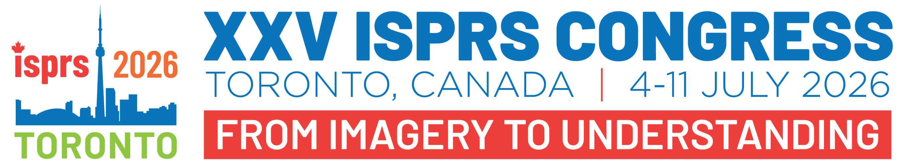

Hello. I am the official
ISPRS 2026
AI Assistant.
I am here to help you with information regarding the scientific program, registration, and congress logistics.
ISPRS AI is searching the database...